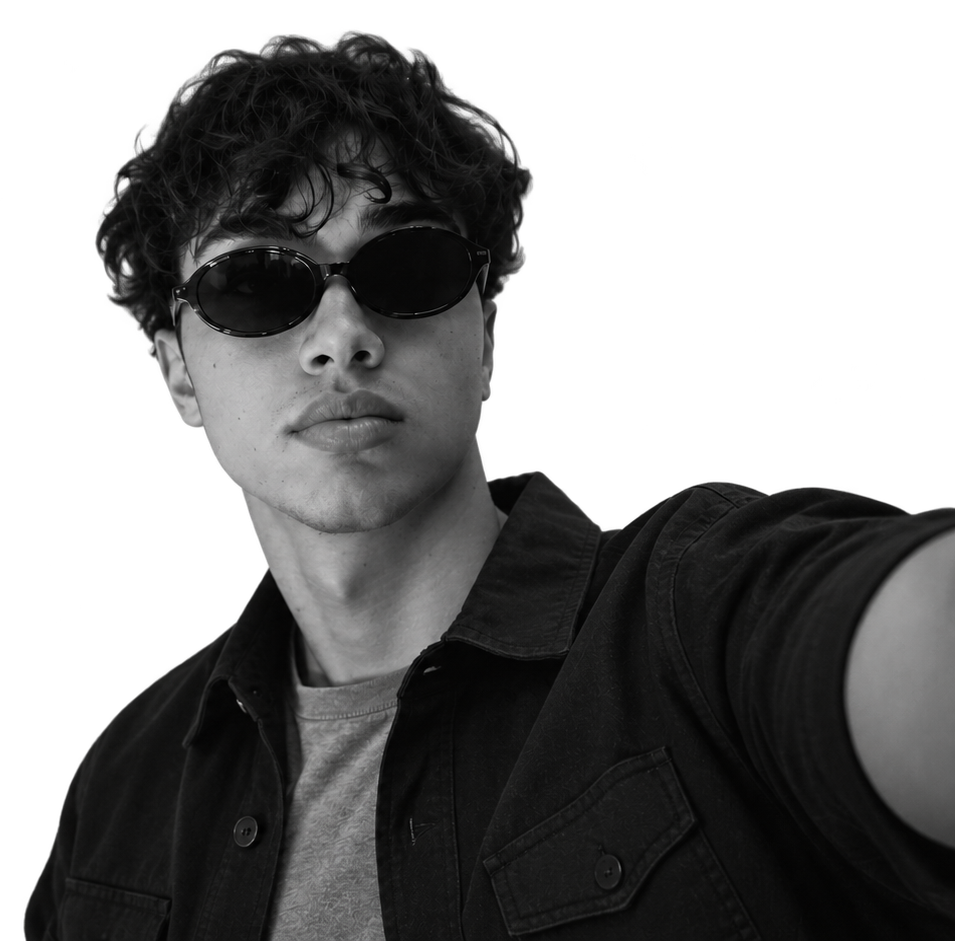

Portfólio pessoal
Site para apresentar perfil, conhecimentos e projetos, com layout responsivo e interações em JavaScript.
Tecnologias: HTML, CSS e JavaScript.
DESENVOLVIMENTO DE SOFTWARE
Estudante de Engenharia de Software interessado em tecnologia, desenvolvimento web e criação de soluções digitais.

QUEM SOU
Sou estudante de Engenharia de Software e tenho interesse em desenvolvimento web, tecnologia e na construção de experiências digitais funcionais e acessíveis.
Busco desenvolver meus conhecimentos na prática, criando projetos e aprendendo a organizar melhor o código, a interface e a interação com o usuário.
TRABALHOS
Alguns projetos e experiências de desenvolvimento.
Site para apresentar perfil, conhecimentos e projetos, com layout responsivo e interações em JavaScript.
Tecnologias: HTML, CSS e JavaScript.
Protótipo desenvolvido com Arduino e sensores para auxiliar na identificação de obstáculos de pessoas com deficiência visual
Tecnologias: Arduino, C++ e Tinkercad.
Projeto de portal escolar para consulta de notas, atividades pendentes, horários e comunicados.
Tecnologias: HTML, CSS, JavaScript, Node.js e SQL.
Nenhum projeto encontrado nesta categoria.
FERRAMENTAS
FALE COMIGO
Entre em contato para conversar sobre projetos, estudos e oportunidades.
E-mail: gustaavo.mxf@gmail.com
github: gustavo-mxf